Un noyau radioactif a la capacité d'émettre une particule en changeant de composition. La désintégration radioactive est spontanée (indépendante de conditions extérieures), aléatoire (instant imprévisible pour un noyau individuel) et inéluctable (se produit forcément).
¹²C, ¹⁶O, ⁵⁶Fe, ²⁰⁸Pb — ces noyaux n'émettent aucun rayonnement. Il en existe moins de 300.
¹⁴C, ²³⁸U, ²²²Rn, ⁶⁰Co, ¹³¹I — plusieurs milliers de radio-isotopes recensés, dont beaucoup sont créés artificiellement.
Conservation du nombre de masse A (nombre de nucléons) : A₁ + A₂ = A₃ + A₄
Conservation du numéro atomique Z (charge) : Z₁ + Z₂ = Z₃ + Z₄
Dans le diagramme de Ségré, le noyau ¹³¹I (iode-131) est représenté avec N = 78 neutrons et Z = 53 protons.
1. Calculez le nombre de neutrons N de l'iode-131 (A = 131, Z = 53).
2. Ce noyau se situe au-dessus ou en dessous de la droite N = Z ? Que peut-on en déduire sur son type probable de radioactivité ?
3. Vérifiez sur le diagramme interactif ci-dessus en recherchant "I" ou Z = 53.
Le radon-222 est un gaz radioactif naturel présent dans les sous-sols. Il se désintègre par émission α.
1. Rappeler les caractéristiques (A, Z) de la particule α.
2. Écrire l'équation complète de la désintégration α du radon-222 (²²²₈₆Rn). Identifier le noyau fils.
3. Situer le radon-222 et le noyau fils sur le diagramme de Ségré interactif. Décrivez qualitativement le déplacement dans le diagramme.
²²²₈₆Rn → ²¹⁸₈₄Po + ⁴₂He
L'uranium-238 (²³⁸₉₂U) se désintègre par une chaîne de plusieurs étapes avant d'atteindre le plomb-206 (²⁰⁶₈₂Pb), noyau stable.
1. Calculer la variation totale ΔA et ΔZ entre ²³⁸U et ²⁰⁶Pb.
2. Sachant que chaque désintégration α diminue A de 4 et Z de 2, et que chaque β⁻ conserve A et augmente Z de 1, déterminer le nombre x de désintégrations α et le nombre y de désintégrations β⁻ dans cette chaîne.
3. Comment le diagramme de Ségré permet-il de visualiser cette chaîne ?
ΔZ = 2x − y ⟹ 10 = 16 − y ⟹ y = 6 désintégrations β⁻.
Arrêté : feuille de papier
Noyaux lourds (Z > 82)
Arrêté : mm d'aluminium
Excès de neutrons
Arrêté : mm d'aluminium
Excès de protons
La plupart des noyaux fils issus d'une désintégration sont dans un état excité (Y*). Ils reviennent à l'état fondamental en émettant un photon γ (haute énergie). A et Z sont inchangés.
Exemple : ⁶⁰₂₇Co* → ⁶⁰₂₇Co + γ (associé à la désintégration β⁻ du cobalt-60)
Le noyau est au-dessus de la vallée de stabilité. Un neutron se transforme en proton : N diminue de 1, Z augmente de 1. Le noyau se rapproche de la vallée.
Le noyau est en dessous de la vallée. Un proton se transforme en neutron : Z diminue de 1, N augmente de 1. Le noyau se rapproche de la vallée.
Les noyaux très lourds (Z > 82) allègent leur masse en émettant ⁴He : A diminue de 4, Z de 2. Déplacement diagonal vers le bas-gauche.
Pas de changement de Z ni de A. Le noyau excité Y* revient à son état fondamental Y en rayonnant un photon γ.
Le tritium ³₁H (isotope radioactif de l'hydrogène) est utilisé dans certaines montres lumineuses.
1. Écrire l'équation de désintégration du tritium (il est émetteur β⁻).
2. Identifier le noyau fils en utilisant les lois de conservation.
3. Ce noyau fils est-il stable ? Argumenter en utilisant le diagramme de l'onglet I.
³₁H → ³₂He + ⁰₋₁e + ⁰₀ν̄ₑ
Le fluor-18 (¹⁸₉F) est le traceur radioactif le plus utilisé en imagerie TEP (Tomographie par Émission de Positons).
1. Écrire l'équation de désintégration du fluor-18, sachant qu'il est émetteur β⁺.
2. Lors de la désintégration β⁺, le positon émis s'annihile avec un électron du tissu. Cette annihilation produit deux photons γ. Écrire l'équation de cette annihilation.
3. Pourquoi l'émission de deux photons γ opposés est-elle utile pour l'imagerie médicale ?
¹⁸₉F → ¹⁸₈O + ⁰₊₁e + ⁰₀νₑ
Un noyau X de numéro atomique Z = 88 et de nombre de masse A = 228 se désintègre en donnant un noyau Y de numéro atomique Z = 89 et de nombre de masse A = 228.
1. Identifier les éléments X et Y (utiliser le tableau périodique : Z=88→Ra, Z=89→Ac).
2. Déterminer la particule émise lors de cette désintégration. S'agit-il d'un type de radioactivité vu en cours ?
3. Écrire l'équation complète de désintégration.
4. Sur le diagramme de Ségré, dans quelle direction se déplace le noyau ?
L'activité A(t) d'un échantillon est le nombre de désintégrations radioactives par seconde.
Unité : becquerel (Bq) — 1 Bq = 1 désintégration·s⁻¹
Ancienne unité : curie (Ci) — 1 Ci = 3,7 × 10¹⁰ Bq (activité d'1 g de radium-226)
Soit N(t) le nombre de noyaux radioactifs à l'instant t. Pendant Δt, le nombre de désintégrations est N(t) − N(t+Δt). L'activité moyenne est A_m = [N(t) − N(t+Δt)] / Δt.
L'activité est l'opposé de la dérivée temporelle du nombre de noyaux
L'activité est proportionnelle au nombre de noyaux : A(t) = λ · N(t)
λ (en s⁻¹) est la constante radioactive, caractéristique du noyau. Elle s'interprète comme la probabilité de désintégration par unité de temps.
| Noyau | λ (s⁻¹) |
|---|---|
| ²¹⁸Rn | 19,5 |
| ²²²Rn | 2,10 × 10⁻⁶ |
| ¹⁴C | 3,83 × 10⁻¹² |
| ²³⁸U | 4,92 × 10⁻¹⁸ |
| Substance | A massique (Bq·kg⁻¹) |
|---|---|
| Corps humain | ~100 |
| Matériaux de construction | ~1 000 |
| Minerai d'uranium | 10⁷ |
| Plutonium-239 | 10¹² |
Le compteur Geiger-Müller est un détecteur de rayonnements ionisants. Chaque particule α, β ou photon γ traversant le tube provoque une avalanche électronique détectée comme une impulsion — directement reliée à l'activité A(t) = λ·N(t).
Un échantillon contient N₀ = 2,0 × 10¹² noyaux de radon-222 à t = 0.
1. Calculer l'activité initiale A₀ de cet échantillon en Bq.
2. Exprimer ce résultat en MBq (mégabecquerel).
Un détecteur mesure une activité de 3,7 × 10⁴ Bq pour un échantillon de carbone-14.
1. Calculer λ pour le carbone-14.
2. En déduire le nombre N de noyaux ¹⁴C présents.
3. Calculer la masse m de carbone-14 dans l'échantillon (utiliser M(¹⁴C) = 14 g·mol⁻¹).
En combinant les deux expressions de l'activité, établir l'équation différentielle satisfaite par N(t), puis montrer que la solution est N(t) = N₀ e^(−λt).
1. Exprimer dN/dt en fonction de λ et N(t).
2. Identifier le type de cette équation différentielle.
3. Vérifier que N(t) = N₀ e^(−λt) est bien solution, en précisant la condition initiale utilisée.
4. En déduire l'expression de A(t) en fonction de A₀, λ et t.
avec τ = 1/λ : constante de temps (intersection tangente à l'origine et asymptote N = 0)
Durée nécessaire pour que le nombre de noyaux (et l'activité) soit divisé par 2 :
| Noyau | Demi-vie |
|---|---|
| ¹⁸F | 109,8 min |
| ¹³¹I | 8,02 jours |
| ⁶⁰Co | 5,27 ans |
| ¹⁴C | 5 730 ans |
| ²³⁸U | 4,47 × 10⁹ ans |
Un échantillon d'iode-131 a une activité initiale A₀ = 800 MBq. La demi-vie de l'iode-131 est t₁/₂ = 8,02 jours.
1. Quelle est l'activité après 3 demi-vies ? Après 24,06 jours ?
2. Calculer λ pour l'iode-131 (en s⁻¹).
3. Calculer l'activité A après t = 20 jours.
On mesure l'activité d'un échantillon de strontium-90 à différents instants :
1. Identifier la demi-vie à partir du tableau.
2. Calculer λ (en an⁻¹ puis en s⁻¹).
3. Vérifier que A(10 ans) = 327 Bq est cohérent avec la loi de décroissance.
On trace la courbe N(t) d'un échantillon radioactif. La tangente à l'origine coupe l'axe des abscisses à t = τ = 72 h. N₀ = 5,0 × 10¹⁰ noyaux.
1. Écrire l'équation de la tangente à l'origine (en fonction de N₀, λ, t).
2. En déduire λ et t₁/₂.
3. Calculer N(t₁/₂) et vérifier la cohérence.
4. Calculer l'activité initiale A₀ et exprimer en GBq.
La loi de décroissance radioactive permet de calculer l'âge d'un échantillon :
Le choix de l'isotope se fait en fonction de l'âge estimé de l'objet : t₁/₂ doit être du même ordre de grandeur que l'âge.
⚗ Simulateur — Datation au carbone-14 (t₁/₂ = 5 730 ans)
t₁/₂ = 5 730 ans. Datation de matières organiques (bois, os, textiles, charbons). Formé dans l'atmosphère par neutrons cosmiques sur ¹⁴N. Limite ~50 000 ans.
t₁/₂ = 4,47 × 10⁹ ans. Datation des roches anciennes et de l'âge de la Terre (~4,5 milliards d'années). Utilisé en géologie et en cosmochimie.

Voir la vidéo la datation par le carbone 14 sur cea.fr
Particule ou photon de haute énergie capable d'ioniser la matière vivante (créer des paires d'ions). Effets biologiques : rupture de l'ADN, cancers, syndrome aigu d'irradiation (forte dose).
| Rayonnement | Nature | Pénétrance | Écran minimal |
|---|---|---|---|
| α | Noyau ⁴He²⁺ | Très faible (cm dans l'air) | Feuille de papier / peau |
| β⁻ / β⁺ | Électron / positon | Faible (~m dans l'air) | Quelques mm d'aluminium |
| γ / X | Photon haute énergie | Très élevée | Plomb épais, béton |
| Neutrons | Neutron libre | Très élevée | Eau, polyéthylène, béton |
Animation interactive du CEA illustrant les propriétés des trois types de rayonnements : portée dans la matière, pouvoir ionisant, blindages nécessaires (papier, aluminium, plomb).
🔗 Ouvrir l'animation sur le site du CEAUn médecin doit réaliser une scintigraphie thyroïdienne. Il dispose de deux traceurs : l'iode-123 (t₁/₂ = 13,2 h) et l'iode-131 (t₁/₂ = 8,02 jours).
1. Quel traceur choisira-t-il pour une imagerie ? Justifier en terme d'irradiation du patient.
2. Dans quel cas l'iode-131 est-il préféré ?
Un morceau de bois fossilisé présente une activité A₁ = 1,52 Bq·g⁻¹. Un bois vivant actuel a une activité A₀ = 13,6 Bq·g⁻¹ due au carbone-14.
1. Calculer λ en an⁻¹.
2. Calculer l'âge t₁ de ce vestige.
3. L'hypothèse de départ (A₀ constante dans le temps) est-elle parfaitement vérifiée ? Expliquer.
Un minéral contient initialement uniquement de l'uranium-238. Après analyse, on y trouve N(²³⁸U) = 9,65 × 10²⁰ noyaux et N(²⁰⁶Pb) = 1,07 × 10²⁰ noyaux.
1. Montrer que N₀(²³⁸U) = N(²³⁸U) + N(²⁰⁶Pb) (expliquer pourquoi).
2. Calculer λ (en an⁻¹).
3. Calculer l'âge du minéral.
Activité 1 — Découverte de la radioactivité
Voir la vidéo : La découverte de la radioactivité par CEA Sciences
Après avoir visionné le film sur Henri Becquerel, lire le texte puis répondre aux questions.
— Henri Becquerel, note à l'Académie des sciences, 1896.
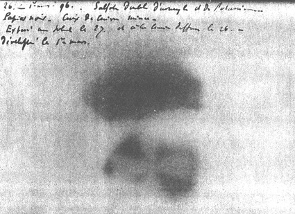
1. Combien d'hypothèses Henri Becquerel fait-il pour obtenir une interprétation correcte des résultats expérimentaux qu'il obtient ? Les énumérer.
2. Est-ce la lumière solaire qui impressionne la plaque photo dans l'expérience de Becquerel ?
3. D'où provient le rayonnement qui impressionne la plaque photo ?
4. Sur la photographie obtenue par Henri Becquerel, on distingue les contours d'une croix.
4.1 Quel est le matériau qui a laissé ces contours ?
4.2 Que peut-on en conclure concernant les rayonnements radioactifs mis en évidence par Becquerel dans cette expérience ?
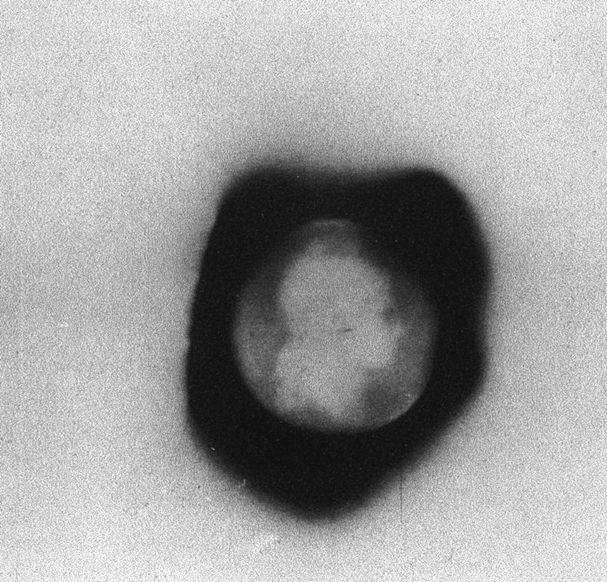
5. Lors de son expérience, Henri Becquerel utilise des sels d'uranium contenant des atomes d'uranium 235 radioactifs notés 23592U. De quoi est constitué un noyau d'uranium 235 ?
À la fin du XIXème siècle et dans la première moitié du XXème, la conception de l'atome et de la matière a changé radicalement.
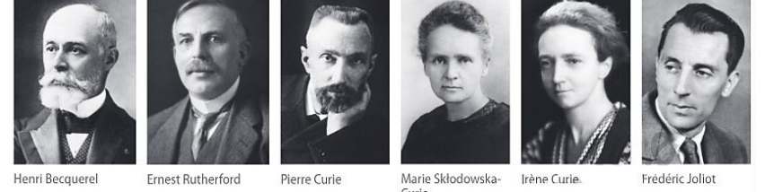
— Marie Skłodowska-Curie, « Rayons émis par les composés de l'uranium et du thorium », Comptes rendus de l'Académie des sciences, t. CXXVII, 1898.
Découverte du polonium : en 1898, Marie Curie est une jeune scientifique inconnue ayant à peine fini ses études. Pour sujet de thèse, elle choisit d'étudier les rayonnements émis par les composés d'uranium, découverts deux ans auparavant par Henri Becquerel. À l'aide d'un appareil mis au point avec son mari Pierre Curie, elle mesure les rayonnements émis par de nombreuses substances. Elle découvre que seuls les minerais d'uranium et de thorium sont radioactifs, et constate une anomalie. Plus tard Pierre et Marie Curie baptisent ce nouvel élément polonium, en hommage au pays de naissance de Marie Curie.
Découvertes associées à cette période : radioactivité naturelle · radioactivité artificielle · polonium · radium · positron · neutron · électron · proton · existence du noyau dans l'atome · particules α et β · lois de conservation dans les transformations nucléaires · effets biologiques de la radioactivité · scintigraphie.
1. Pour chacun·e des savant·e·s ci-dessus, rechercher sa nationalité, ses dates de naissance, d'obtention du prix Nobel et de décès. Préciser la raison pour laquelle a été attribué chaque prix Nobel.
2. Le texte ci-dessus présente un extrait du premier article de recherche de Marie Curie concernant la radioactivité. Expliquer pourquoi la découverte de Marie Curie lui permet de postuler l'existence d'un élément inconnu jusqu'alors et de conclure que cet élément est très radioactif.
3. Sur une frise chronologique, placer chacune des découvertes évoquées ci-dessus ainsi que le nom du, de la ou des scientifique(s) qui en est (sont) responsable(s).
Activité 2 — Les types de rayonnements radioactifs
On établit également que, contrairement aux précédents, le rayonnement γ que seule une grande épaisseur de plomb ou de béton permettait de contenir, ne constituait pas un ensemble de particules matérielles mais était de nature électromagnétique, s'apparentant à la lumière ou aux rayons X, avec toutefois une énergie supérieure. »
— D'après M.Ch de la Souchère, La Radioactivité, Ellipses, 2005.
— D'après un dossier de TPE d'élèves de première scientifique.
Compléter le tableau ci-dessous :
| Rayonnement | Notation AZX | électrons | charge | neutrons | Comment stopper le rayonnement ? |
|---|---|---|---|---|---|
| α | |||||
| β⁺ | |||||
| β⁻ | |||||
| γ |
Ligne α
Ligne β⁺
Ligne β⁻
Ligne γ
Activité 3 — Stabilité des noyaux : le diagramme (N ; Z) de Segré
Alors que seulement 118 éléments chimiques, classés dans le tableau périodique, ont été identifiés sur Terre ou en laboratoire, plus de 1500 noyaux connus sont classés dans un diagramme (N ; Z).
Comment extraire les informations sur la stabilité d'un noyau grâce au diagramme (N ; Z) ?
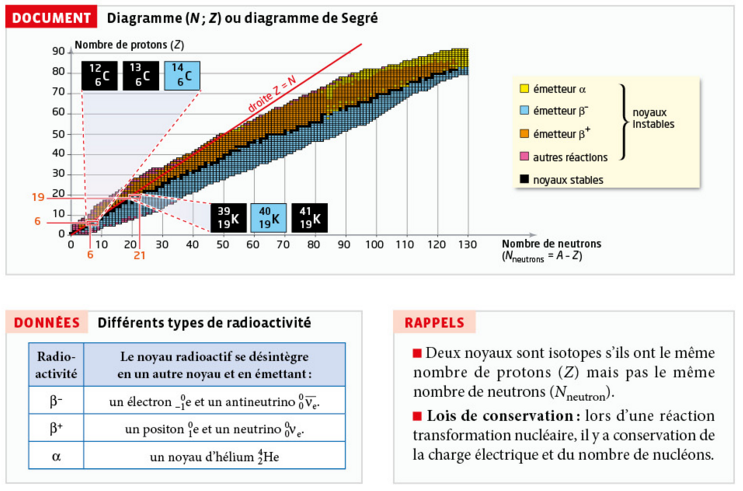
| Radioactivité | Le noyau radioactif se désintègre en un autre noyau et en émettant : |
|---|---|
| β⁻ | un électron 0-1e et un antineutrino 00ν̄ₑ |
| β⁺ | un positon 01e et un neutrino 00νₑ |
| α | un noyau d'hélium 42He |
Deux noyaux sont isotopes s'ils ont le même nombre de protons (Z) mais pas le même nombre de neutrons (N).
Lois de conservation : lors d'une réaction transformation nucléaire, il y a conservation de la charge électrique et du nombre de nucléons.
1. S'approprier
a. Repérer les noyaux suivants sur le diagramme : 126C, 136C, 146C, 3919K, 4019K, 4119K. Indiquer pour chacun s'il est stable ou instable. Comment peut-on qualifier des noyaux situés sur une même ligne ?
b. Pour l'ensemble des noyaux du document, préciser si les noyaux les plus abondants du diagramme sont des noyaux stables ou instables.
2. Analyser-raisonner
a. Le phosphore-30 peut subir une transformation nucléaire, modélisée par la réaction d'équation 3015P → 3014Si + 01e + 00νₑ. Identifier le type de radioactivité associé à cette désintégration et montrer que l'équation de cette transformation nucléaire respecte les lois de conservation.
b. L'uranium-238 peut se désintégrer en thorium-234 suivant un processus de radioactivité α. Écrire l'équation de la réaction nucléaire qui modélise cette transformation.
3. Communiquer GRAND ORAL
Préparer une communication orale, présentée sans note, permettant d'expliquer quelles informations peuvent être extraites du diagramme (N ; Z).
Activité 4 — Radioactivité artificielle et décroissance radioactive
Cependant, les deux physiciens découvrirent en janvier 1934 que l'émission de positrons n'était pas instantanée. Le processus comportait donc deux étapes : dans la première était formé dans l'aluminium (après émission de neutrons) un isotope radioactif du phosphore qui n'existait pas dans la nature, dans la seconde, ce phosphore 30 radioactif se désintégrait en silicium 30 stable par émission de positrons. Le nouveau phénomène fut appelé « radioactivité artificielle ». »
— D'après P.Radvanyi, Histoire de l'atome, Belin, 2007.
Substance radioactive artificielle, le phosphore 32 est utilisé en médecine nucléaire. Il est radioactif β⁻ et sa demi-vie t₁/₂ est égale à 14,3 jours. Il se présente sous forme d'une solution qui s'injecte par voie veineuse pour traiter la polyglobulie primitive (maladie de Vaquez). Il se fixe sélectivement sur les globules rouges (hématies), car il suit le métabolisme du fer, abondant dans ces globules, et son rayonnement détruit les hématies en excès. C'est un traitement efficace et bien toléré de cette affection.
— D'après le site « dictionnaire médical »
Données : extrait de la classification périodique : _11Na ; _12Mg ; _13Al ; _14Si ; _15P ; _16S ; _17Cl.
1. Donner la représentation symbolique puis la composition du noyau de l'atome de phosphore naturel 31.
2. Le phosphore 30 est radioactif β⁺ : en quoi s'agit-il d'une radioactivité « artificielle » ? Donner sa représentation symbolique et sa composition.
3. Comment appelle-t-on les noyaux des atomes de phosphore 30, 31 et 32 ? Pourquoi ?
4. Recopier et compléter l'équation décrivant la 1ère étape de l'expérience analysée par Frédéric et Irène Joliot-Curie en 1934 :
_13Al + 42He → 30_P + 10n
5. Quelles sont les relations entre les nombres de charge et de masse des réactifs et des produits ? Lors d'une réaction nucléaire, quelles sont les grandeurs qui se conservent ?
6. Écrire l'équation de désintégration radioactive du phosphore 30 qui se produit lors de la deuxième étape de cette même expérience.
Un patient reçoit par voie intraveineuse une solution de phosphate de sodium contenant une masse m₀ égale à 10,0×10⁻⁹ g de phosphore 32, dont l'activité vaut 106 MBq.
7. L'activité d'un échantillon radioactif est le nombre moyen de désintégrations nucléaires par seconde. Donner l'unité de l'activité.
8. On appelle « période radioactive » ou demi-vie t₁/₂ d'un noyau radioactif, la durée au bout de laquelle l'activité d'un échantillon contenant ce noyau est divisée par deux.
Compléter les deux lignes du tableau suivant :
| t (en jours) | t = 0 | t₁/₂ = ... | 2t₁/₂ = ... | 3t₁/₂ = ... | 4t₁/₂ = ... | 5t₁/₂ = ... |
| A (en MBq) | 106 |
9. Tracer la courbe représentative de l'activité de l'échantillon en fonction du temps. Au bout de quelle durée l'activité a-t-elle été divisée par cinq ?
Activité 5 — Datation au carbone 14
Il existe de nombreuses techniques de datation utilisant la radioactivité. La datation au carbone 14 est adaptée à la datation de matière organique.
Le carbone naturel est constitué de 126C (98,9 % du carbone naturel terrestre, non radioactif) et de 136C (1,1 %, non radioactif), auxquels s'ajoute 146C, présent naturellement à l'état de traces infimes.
146C est radioactif β⁻ de demi-vie t₁/₂ = 5 730 ans. Il est produit en permanence dans la haute atmosphère, par la rencontre d'un noyau d'azote 14 avec un neutron cosmique, qui produit également une autre particule.
Tout être vivant, végétal ou animal, contient du carbone. Celui-ci est en permanence renouvelé, dans les végétaux par la photosynthèse à partir du dioxyde de carbone atmosphérique et dans les animaux par l'alimentation.
Tant que l'être est en vie, la proportion du carbone se trouvant sous forme de l'isotope 146C est, comme dans l'atmosphère, constante. Ainsi, un échantillon de carbone de masse 1,000 g issu d'un être vivant ou de l'atmosphère a une activité constante A₀ égale à 13,56 désintégrations par minute.
Une fois que l'être est mort, le carbone qu'il contient n'est plus renouvelé. Comme le carbone 14 est radioactif, sa quantité diminue, donc l'activité qu'il engendre diminue également. Par une mesure d'activité, on peut connaître la durée écoulée entre la mort de l'être ayant contenu ce carbone et la date de la mesure effectuée, en utilisant la loi de décroissance radioactive.
L'activité de chaque échantillon est ramenée à un gramme de carbone de l'échantillon. Toutes les mesures sont faites en 2010.
- Papier du dessin la Joconde nue, attribuée à Léonard de Vinci : 0,213 Bq.
- Charbons de bois prélevés dans des canaux sur le site de Gadachrili Gora, en Géorgie : 0,086 Bq.
- Bois d'échafaudage dans le site des Arêtes de poisson, à Lyon : 0,179 Bq.
- Traces de feu dans la grotte de Bruniquel, dans l'Aveyron : 7,7 × 10⁻⁴ Bq.
1. Écrire les équations de formation et de désintégration de 146C (doc. 1).
2.a. Exprimer en becquerels (nombre de désintégrations par seconde) l'activité d'un gramme de carbone pris dans un être vivant (doc. 2).
2.b. En utilisant la demi-vie du carbone 14, déterminer le nombre d'atomes de carbone 14 dans un gramme d'être vivant.
2.c. À l'aide de la masse molaire du carbone, déterminer le nombre d'atomes de carbone dans un gramme de carbone. En déduire la proportion d'atomes de carbone se trouvant sous forme de carbone 14 dans un être vivant.
3. En utilisant la loi de décroissance radioactive, déterminer, pour chaque échantillon du doc. 3, la date de mort de l'être vivant à l'origine de l'échantillon.
• Faire la liste des sources d'incertitude d'une telle datation. Expliquer pourquoi l'incertitude est plus élevée si l'échantillon daté est plus vieux.
• Pourquoi cette méthode de datation ne peut-elle pas être utilisée pour dater n'importe quel objet ?
Exercice 15 : Écrire une équation de désintégration β⁺
Une photo de la réaction du sodium métallique au contact de l'eau est donnée ci-contre.
DONNÉE Équation de la réaction modélisant la transformation entre le sodium métallique et l'eau :
2 Na(s) + 2 H₂O(ℓ) → 2 Na⁺(aq) + 2 HO⁻(aq) + H₂(g)
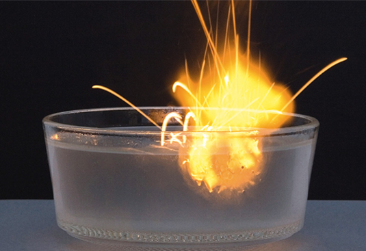
a. Préciser si la réaction entre le sodium métallique et l'eau est une transformation nucléaire. Justifier.
b. Écrire l'équation de désintégration β⁺ du sodium-21.
a. Ce n'est pas une transformation nucléaire : l'équation ne fait intervenir aucun changement de noyau (le sodium reste du sodium, Na → Na⁺), seulement une perte d'un électron et la formation de nouvelles espèces chimiques. C'est une transformation chimique.
b. Le sodium a pour numéro atomique Z = 11, donc le sodium-21 s'écrit 2111Na. L'équation de désintégration β⁺ s'écrit :
2111Na → 2112Mg + 01e
(conservation du nombre de nucléons : 21 = 21 + 0 ; conservation de la charge : 11 = 12 − 1)
Exercice 17 : Écrire une équation de réaction
Le carbone-14 se forme dans la haute atmosphère terrestre : sous l'effet du rayonnement cosmique, un noyau d'azote-14 capture un neutron et forme le carbone-14 et un autre noyau.
Écrire l'équation de la réaction modélisant cette capture neutronique.
L'équation de la réaction s'écrit :
147N + 10n → 146C + 11H
(conservation du nombre de nucléons : 14 + 1 = 14 + 1 ; conservation de la charge : 7 + 0 = 6 + 1). L'autre noyau formé est donc un noyau d'hydrogène, c'est-à-dire un proton.
Exercice 19 : Reproduire une courbe de décroissance radioactive
Reproduire soigneusement la courbe de décroissance radioactive donnée ci-contre, en plaçant avec précision le point d'abscisse 3t₁/₂.
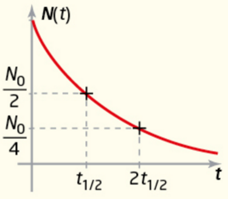
À chaque durée t₁/₂ écoulée, le nombre de noyaux restants est divisé par 2 : N(0) = N₀ ; N(t₁/₂) = N₀/2 ; N(2t₁/₂) = N₀/4 ; donc N(3t₁/₂) = N₀/8. Le point d'abscisse 3t₁/₂ doit être placé sur la courbe à l'ordonnée N₀/8, en poursuivant la décroissance exponentielle déjà amorcée entre 0 et 2t₁/₂.
Exercice 22 : Calculer l'activité d'un échantillon
Le césium-137 est un isotope radioactif du césium, produit notamment lors de la fission de l'uranium ; son temps de demi-vie est t₁/₂ = 30 ans.
À la date t = 0, un échantillon de césium-137 a une activité A₀ = 1,0 × 10⁷ Bq.
DONNÉE Le temps de demi-vie et la constante radioactive d'un noyau sont liées par l'expression t₁/₂ = ln(2)/λ.
a. Calculer la constante radioactive du césium-137.
b. Exprimer puis calculer l'activité de l'échantillon radioactif après une durée de désintégration Δt = 1,0 an.
a. λ = ln(2)/t₁/₂ = 0,693/30 = 2,3 × 10⁻² an⁻¹.
b. A(Δt) = A₀ × e−λΔt = 1,0×10⁷ × e−(2,3×10⁻² × 1,0) = 1,0×10⁷ × e−0,023 ≈ 1,0×10⁷ × 0,977 ≈ 9,8 × 10⁶ Bq.
Exercice 24 : Retour sur l'ouverture du chapitre
Visionner la vidéo d'ouverture du chapitre montrant l'inauguration d'un nouvel appareil d'imagerie médical combinant un TEP et un scanner.
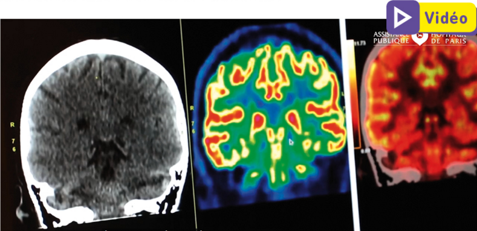
a. Expliquer le terme « traceur radioactif ».
b. Justifier la nécessité d'utiliser des traceurs radioactifs de temps de demi-vie ni trop courtes ni trop longues.
c. Expliquer, éventuellement à l'aide d'une recherche, la signification de l'abréviation « TEP ».
a. Un traceur radioactif est une substance contenant un noyau radioactif, introduite dans l'organisme (par injection, ingestion ou inhalation), dont le rayonnement émis lors de la désintégration peut être détecté de l'extérieur. Il permet de « suivre » son cheminement ou sa fixation dans un organe cible sans intervention invasive.
b. Une demi-vie trop courte ne laisserait pas le temps de réaliser l'examen (le traceur aurait quasiment disparu avant la détection). Une demi-vie trop longue prolongerait inutilement l'irradiation du patient après l'examen, alors que le traceur n'est plus utile une fois l'imagerie réalisée.
c. TEP signifie Tomographie par Émission de Positons : technique d'imagerie médicale utilisant un traceur émetteur β⁺, dont l'annihilation positon-électron produit deux photons γ détectés pour reconstruire une image 3D de l'activité métabolique.
Exercice 25 : Se protéger des rayonnements
Dans les installations à risque radioactif, des affiches sont prévues à l'entrée des zones exposées aux rayonnements ionisants afin d'offrir un rappel supplémentaire de sécurité.
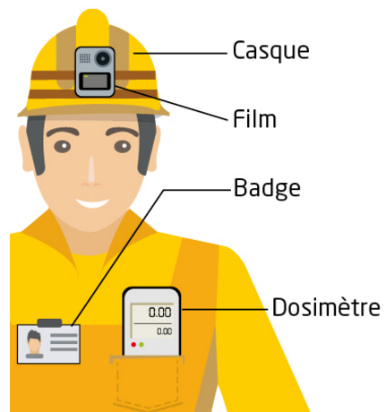
a. Relever le nom du dispositif qui mesure le niveau d'exposition aux rayonnements ionisants.
b. Expliquer pourquoi certaines installations mentionnent des durées maximales de séjour dans des zones spécifiées.
c. Déduire de la question b. une modalité de protection contre les rayonnements ionisants.
a. Le dispositif qui mesure le niveau d'exposition aux rayonnements ionisants est le dosimètre.
b. La dose de rayonnement reçue par une personne augmente avec la durée d'exposition. Limiter le temps de séjour dans une zone irradiée permet donc de limiter la dose totale reçue, et donc les effets biologiques associés.
c. On en déduit le principe de protection par le temps : réduire au minimum nécessaire la durée d'exposition aux rayonnements ionisants.
Exercice 26 : Analyser un schéma
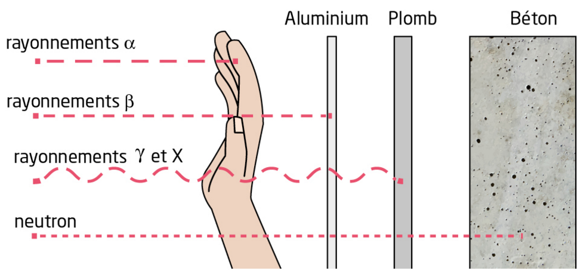
a. Analyser et interpréter l'illustration.
b. En déduire deux facteurs d'influence relatifs à l'utilisation d'écrans pour se protéger des rayonnements ionisants.
a. Le schéma montre que les rayonnements α sont arrêtés avant même l'aluminium (dès la main/quelques cm d'air) ; les rayonnements β sont arrêtés par l'aluminium ; les rayonnements γ et X traversent l'aluminium et le plomb mais sont arrêtés par le béton ; le neutron traverse même le béton. Le pouvoir de pénétration croît donc dans l'ordre : α < β < γ/X < neutron.
b. Deux facteurs influencent le choix d'un écran de protection : la nature du rayonnement à arrêter (α, β, γ/X ou neutron n'ont pas le même pouvoir de pénétration) et la nature du matériau utilisé comme écran (l'aluminium suffit pour le β, mais il faut du plomb ou du béton, plus denses, pour arrêter les γ/X).
Exercice 28 : Activité du polonium-210
L'élément polonium est ainsi nommé en l'honneur de la nationalité d'origine de Marie Curie qui l'a découvert. Le polonium-210, isotope radioactif α du polonium, était autrefois utilisé comme source d'énergie pour maintenir les instruments des robots lunaires à une température adaptée à leur condition de fonctionnement. Une source de polonium-210, de masse m = 1,00 g a une activité de 1,7 × 10¹⁴ Bq.
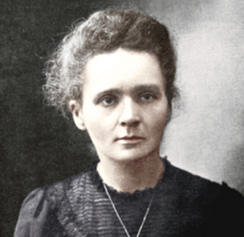
DONNÉES · Activité moyenne d'un gramme de minerai d'uranium : A_m = 1,0 × 10⁷ Bq.
· Temps de demi-vie du polonium-210 : 138 jours ; t₁/₂ = ln(2)/λ.
a. Écrire l'équation de réaction modélisant la désintégration du polonium-210.
b. L'évolution temporelle de la population en noyaux de polonium-210 de l'échantillon vérifie l'équation : dN/dt = −λN(t). Présenter cette équation sous sa forme usuelle puis la nommer. En déduire l'expression de la fonction N(t).
c. Déterminer la durée nécessaire pour que l'activité de cette source soit égale à celle d'un gramme de minerai d'uranium.
a. Le polonium a pour numéro atomique Z = 84, donc le polonium-210 s'écrit 21084Po. L'équation de désintégration α s'écrit :
21084Po → 20682Pb + 42He
(conservation du nombre de nucléons : 210 = 206 + 4 ; conservation de la charge : 84 = 82 + 2). Le noyau fils est un noyau de plomb.
b. Sous sa forme usuelle, cette équation s'écrit dN/dt + λN(t) = 0 : c'est l'équation différentielle de la décroissance radioactive. Sa solution est N(t) = N₀ × e−λt, où N₀ = N(0) est le nombre de noyaux de polonium-210 présents à l'instant initial.
c. λ = ln(2)/138 = 5,02×10⁻³ jour⁻¹. En utilisant A(t) = A₀e−λt : t = (1/λ)×ln(A₀/A_m) = (1/5,02×10⁻³) × ln(1,7×10¹⁴/1,0×10⁷) = 199,1 × ln(1,7×10⁷) = 199,1 × 16,65 ≈ 3,3 × 10³ jours ≈ 9,1 ans.
Exercice 29 : Les cernes du bois
Il est possible d'établir un étalonnage de la méthode de datation au carbone-14 à partir des cernes d'un arbre. Chaque cerne représente une durée d'une année. En prélevant un échantillon dans chaque cerne et en mesurant sa teneur en carbone-14, il est possible de comparer ces teneurs en carbone-14 mesurées aux valeurs calculées par la loi de décroissance radioactive du carbone-14. Cette comparaison constitue une première étape possible dans l'étalonnage de la méthode de datation au carbone-14.
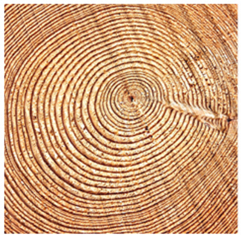
DONNÉE Temps de demi-vie du carbone-14, t₁/₂ = 5730 ans ; t₁/₂ = ln(2)/λ.
a. Rappeler l'expression de l'activité A(t) d'un échantillon contenant du carbone-14 en fonction de A₀, l'activité de cet échantillon à une date t₀ = 0 an.
b. Exprimer puis calculer le rapport A(t₁)/A₀ à la date t₁ = 1,0 an. Commenter le résultat obtenu.
c. Déterminer s'il est possible, à l'aide d'un tronc d'arbre d'âge t₂ = 500 ans, d'enregistrer une décroissance significative de l'activité du carbone-14.
a. A(t) = A₀ × e−λt.
b. λ = ln(2)/5730 = 1,21×10⁻⁴ an⁻¹. A(t₁)/A₀ = e−λ×1,0 = e−1,21×10⁻⁴ ≈ 0,99988. Ce rapport est extrêmement proche de 1 : sur une durée d'un an, la décroissance de l'activité du carbone-14 est totalement négligeable (moins de 0,02 %), donc impossible à distinguer expérimentalement des incertitudes de mesure.
c. A(t₂)/A₀ = e−λ×500 = e−0,0605 ≈ 0,9413, soit une diminution d'environ 5,9 % de l'activité. Cet écart est bien plus important que celui obtenu pour 1 an (0,012 %) et dépasse largement les incertitudes de mesure typiques : une décroissance significative de l'activité du carbone-14 est donc mesurable sur un tronc d'arbre âgé de 500 ans.
Exercice 32 : Un modèle multi-sciences
a. Rappeler ce que signifie que l'évolution de la concentration d'une espèce chimique suit une loi d'ordre un.
b. Expliquer pourquoi il est possible d'affirmer que la vitesse de désintégration radioactive d'un noyau instable suit une loi de vitesse d'ordre un.
a. Dire que l'évolution de la concentration d'une espèce chimique suit une loi d'ordre un signifie que sa vitesse de disparition est proportionnelle à sa propre concentration : v = −d[A]/dt = k×[A], où k est la constante de vitesse. Cette loi conduit à une décroissance exponentielle de la concentration au cours du temps.
b. La vitesse de désintégration radioactive s'écrit −dN/dt = λN(t) : elle est proportionnelle au nombre de noyaux N(t) encore présents, avec λ jouant le rôle de constante de vitesse. Cette relation a exactement la même forme mathématique qu'une loi de vitesse d'ordre un en cinétique chimique, ce qui justifie l'analogie entre les deux modèles.
Exercice 30 : Identifier des isotopes naturels
La méthode de datation « au potassium-argon » permet de dater certaines roches.
DOC. 1 — Isotopes du potassium
Le potassium (Z = 19) possède trois isotopes naturels dont les proportions en quantités de matière sont : 39K (93,2581 %), 40K (0,001167 %) et 41K (6,7302 %). Seul le potassium-40 est radioactif.
88 % des noyaux de potassium-40 se désintègrent en 40Ca (calcium-40) selon la réaction d'équation :
4019K → 4020Ca + 0-1e + 00ν̄ₑ
La constante radioactive associée à cette désintégration est λ₁ = 4,962 × 10⁻¹⁰ an⁻¹, ce qui donne une période radioactive soit un temps de demi-vie T₁ = 1,40 Gan (milliard d'années).
12 % des noyaux de potassium-40 se désintègrent en 40Ar (argon-40) par capture d'une partie des électrons ainsi produits (capture électronique) :
4019K + 0-1e → 4018Ar + 00νₑ
La constante radioactive associée à cette transformation est λ₂ = 0,581 × 10⁻¹⁰ an⁻¹ ce qui donne une période radioactive T₂ = 11,9 Gannées.
D'après ENS Lyon plateforme ACCES
DONNÉE Le temps de demi-vie t₁/₂ et la constante radioactive λ d'un noyau sont liées par l'expression t₁/₂ = ln(2)/λ.
a. Expliquer en quoi l'équation de désintégration du potassium-40 en calcium-40 caractérise une radioactivité β⁻.
b. Retrouver les valeurs du temps de demi-vie du potassium-40 associé aux deux voies de désintégration.
c. Comparer les valeurs calculées dans la question précédente aux deux « périodes » données dans le DOC. 1. Conclure sur la signification de « période radioactive ».
d. Identifier les trois isotopes naturels du potassium sur le DOC. 2 et reproduire les trois cases correspondantes avec les couleurs adaptées.
e. Il existe un grand nombre d'autres isotopes du potassium. Expliquer pourquoi le DOC. 1 ne les mentionne pas.
a. Cette désintégration émet un électron 0-1e (et un antineutrino), ce qui correspond exactement à la définition de la radioactivité β⁻ donnée dans le tableau de l'Activité 3.
b. T₁ = ln(2)/λ₁ = 0,6931/(4,962×10⁻¹⁰) ≈ 1,40 × 10⁹ ans = 1,40 Gan. T₂ = ln(2)/λ₂ = 0,6931/(0,581×10⁻¹⁰) ≈ 1,19 × 10¹⁰ ans = 11,9 Gan.
c. Les valeurs calculées correspondent exactement aux périodes T₁ et T₂ données dans le DOC. 1. Cela montre que ces « périodes radioactives » sont en réalité les temps de demi-vie associés à chaque voie de désintégration prise séparément (comme si elle était la seule voie possible), et non le temps de demi-vie réel du potassium-40 (qui combine les deux voies via λ = λ₁ + λ₂, et vaut en réalité environ 1,25 Gan).
d. Pour Z = 19 : 39K a N = 39 − 19 = 20 (noyau stable, case noire) ; 40K a N = 40 − 19 = 21 (noyau instable, émetteur β⁻ majoritairement, case colorée en conséquence) ; 41K a N = 41 − 19 = 22 (noyau stable, case noire).
e. Le DOC. 1 précise dès la première phrase que le potassium possède trois isotopes naturels. Les autres isotopes du potassium existants n'apparaissent pas à l'état naturel sur Terre : ce sont des isotopes artificiels, produits uniquement en laboratoire ou dans des réacteurs, ce qui explique qu'ils ne soient pas mentionnés dans ce document consacré aux isotopes naturels.
Exercice 31 : Modélisation de l'évolution temporelle d'une population radioactive
L'oxygène-15 est utilisé dans la tomographie par émission de positons, une technique d'imagerie médicale. Une source de cet isotope radioactif β⁺ de l'oxygène est placée dans un détecteur afin de mesurer l'évolution de son activité au cours du temps.
DONNÉE Temps de demi-vie de l'oxygène-15 : t₁/₂ = 122 s.
| t (en s) | A (en MBq) |
|---|---|
| 10 | 189 |
| 20 | 179 |
| 30 | 169 |
| … | … |
| 600 | 6,62 |
a. Écrire l'équation de désintégration de l'oxygène-15.
b. Représenter à l'aide d'un tableur-grapheur la courbe d'évolution temporelle de l'activité de la source.
c. Modéliser cette courbe par une fonction adaptée.
d. Déduire de la modélisation effectuée la valeur initiale de l'activité de l'échantillon, ainsi que la valeur du temps de demi-vie de l'oxygène-15.
a. L'oxygène a pour numéro atomique Z = 8, donc l'oxygène-15 s'écrit 158O. L'équation de désintégration β⁺ s'écrit :
158O → 157N + 01e
(conservation du nombre de nucléons : 15 = 15 + 0 ; conservation de la charge : 8 = 7 + 1). Le noyau fils est un noyau d'azote.
b. Le tableur-grapheur donne une courbe décroissante caractéristique d'une décroissance exponentielle, passant d'environ 189 MBq à t = 10 s à environ 6,6 MBq à t = 600 s.
c. Une courbe de tendance exponentielle modélise correctement les données, sous la forme A(t) = A₀ × e−λt.
d. L'ajustement donne A₀ ≈ 200 MBq et λ ≈ 5,68 × 10⁻³ s⁻¹, soit t₁/₂ = ln(2)/λ ≈ 0,693/5,68×10⁻³ ≈ 122 s, ce qui est cohérent avec la donnée de l'énoncé.
✱ Exercice 33 : L'iode et la thyroïde SVT
L'apport d'iode est essentiel pour l'organisme humain. La captation de cet élément par l'organisme se fait sous forme d'ion iodure au niveau de la glande thyroïde. L'iode participe à la synthèse des hormones thyroïdiennes. En 2016, il a été décidé d'étendre le périmètre du plan particulier d'intervention en étendant de 10 km à 20 km la zone d'application, notamment avec la distribution de comprimés d'iode-127 (sous forme d'iodure de potassium KI) à prendre en cas de fuite radioactive d'iode-131.
DONNÉES · 12753I, seul isotope naturel de l'iode, noyau non radioactif.
· Iode-131 : isotope artificiel de l'iode, radioactif β⁻, présent dans les rejets atmosphériques suite aux accidents nucléaires et dans de nombreux examens médicaux.
· Temps de demi-vie de l'iode-131 : t₁/₂ = 8,1 jours.
· Constante d'Avogadro, N_A = 6,02 × 10²³ mol⁻¹.
a. Citer la zone du corps humain dans laquelle l'élément iode est capté.
b. Justifier la mesure consistant à prendre des pastilles d'iodure de potassium en cas d'incident nucléaire.
c. Écrire l'équation de la désintégration de l'iode-131.
d. Définir le temps de demi-vie de l'iode-131.
e. Exprimer puis calculer λ, la constante radioactive de l'iode-131.
f. Montrer que l'activité A d'un échantillon d'iode-131 de masse m est donnée par : A = λ × (m/M(I)) × N_A, M(I) étant la masse molaire de l'iode-131.
g. Déduire de la réponse f. la masse m₁ d'iode-131 à injecter à un patient pour une scintigraphie thyroïdienne qui nécessite une activité A₁ = 37 MBq.
h. Construire par une méthode de votre choix (tableur-grapheur, papier millimétré, etc.) la représentation graphique de la décroissance de l'activité du produit injecté au cours du temps, pour une durée comprise entre 0 et 50 jours.
i. Déduire de la réponse g., par une méthode graphique, la date t₁₀ pour laquelle l'activité du produit injecté est divisée par dix.
a. L'iode est capté au niveau de la glande thyroïde.
b. L'iode-127 (stable) des pastilles sature la thyroïde en iode, empêchant celle-ci de capter ensuite l'iode-131 radioactif présent dans l'environnement en cas d'accident nucléaire, ce qui limite l'irradiation interne de la thyroïde.
c. L'iode a pour numéro atomique Z = 53, donc l'iode-131 s'écrit 13153I. L'équation de désintégration β⁻ s'écrit :
13153I → 13154Xe + 0-1e
(conservation du nombre de nucléons : 131 = 131 + 0 ; conservation de la charge : 53 = 54 − 1). Le noyau fils est un noyau de xénon.
d. Le temps de demi-vie de l'iode-131 est la durée au bout de laquelle la moitié des noyaux d'iode-131 initialement présents dans un échantillon se sont désintégrés (ou : au bout de laquelle l'activité de l'échantillon est divisée par 2).
e. λ = ln(2)/t₁/₂ = 0,6931/8,1 ≈ 8,56 × 10⁻² jour⁻¹, soit en secondes (t₁/₂ = 8,1×24×3600 = 699 840 s) : λ ≈ 9,90 × 10⁻⁷ s⁻¹.
f. Le nombre de moles d'iode-131 dans l'échantillon est n = m/M(I), donc le nombre de noyaux est N = n×N_A = (m/M(I))×N_A. Comme A = λN, on obtient A = λ × (m/M(I)) × N_A.
g. m₁ = A₁×M(I)/(λ×N_A) = (3,7×10⁷ × 131)/(9,90×10⁻⁷ × 6,02×10²³) = 4,85×10⁹/5,96×10¹⁷ ≈ 8,1 × 10⁻⁹ g ≈ 8,1 ng (une masse infime, typique des traceurs radiopharmaceutiques).
h. Avec A(t) = 37×e−0,0856t (t en jours) : A(0) = 37 MBq ; A(10) ≈ 15,7 MBq ; A(20) ≈ 6,7 MBq ; A(30) ≈ 2,85 MBq ; A(40) ≈ 1,21 MBq ; A(50) ≈ 0,51 MBq. Le tracé donne une courbe de décroissance exponentielle typique.
i. Graphiquement, on lit A = 3,7 MBq (A₁/10) pour t₁₀ ≈ 27 jours. Par le calcul : t₁₀ = ln(10)/λ = 2,303/0,0856 ≈ 26,9 jours.
✱ Exercice 34 : Âge d'une momie
Des égyptologues découvrent une momie. La méthode de datation au carbone-14 est utilisée afin de valider l'âge estimé de la tombe par des considérations historiques. L'hypothèse est que la proportion de carbone-14 dans le dioxyde de carbone atmosphérique est restée stable au cours des derniers millénaires.
DONNÉES · Le carbone-14 est radioactif β⁻ et son temps de demi-vie est t₁/₂ = 5570 ans.
· Quotient r de l'activité d'un échantillon de bois trouvé dans la tombe par l'activité d'un morceau de bois de même masse encore vivant : r = 0,56.
a. Rappeler en quoi consiste une désintégration β⁻ et écrire l'équation de désintégration du carbone-14.
b. Exprimer puis calculer la constante radioactive λ du carbone-14.
c. Exprimer puis calculer l'âge présumé de la tombe découverte.
a. Une désintégration β⁻ correspond à l'émission d'un électron (et d'un antineutrino) par un noyau instable. Pour le carbone-14 :
146C → 147N + 0-1e
(conservation du nombre de nucléons : 14 = 14 + 0 ; conservation de la charge : 6 = 7 − 1).
b. λ = ln(2)/t₁/₂ = 0,6931/5570 ≈ 1,244 × 10⁻⁴ an⁻¹.
c. Le quotient r = A(t)/A₀ = e⁻λᵗ, donc t = −ln(r)/λ = −ln(0,56)/1,244×10⁻⁴ = 0,5798/1,244×10⁻⁴ ≈ 4,66 × 10³ ans (environ 4 660 ans).
Exercice 35 : Le granit de Trégor
Trégor est une ville bretonne sur la côte de granit rose. Lors de la formation de ces roches, des noyaux 8737Rb, 8738Sr et 8638Sr ont été piégés dans le magma granitique.
Le rubidium-87 est radioactif β⁻ et sa désintégration conduit au strontium-87. Si le système est isolé, la teneur isotopique en rubidium-87 diminue et celle en strontium-87 augmente, alors que celle en strontium-86 reste stable.
Grâce à un spectromètre de masse, six échantillons de granit sont analysés afin d'obtenir les rapports isotopiques qui permettent de tracer la courbe isochrone, représentant le quotient y = N₈₇Sr(t)/N₈₆Sr(t) en fonction du quotient x = N₈₇Rb(t)/N₈₆Sr(t). Les résultats des mesures sont donnés dans le tableau suivant.
| x | 2,47 | 0,209 | 4,81 | 5,52 | 3,38 | 1,54 |
| y | 0,7167 | 0,7066 | 0,7278 | 0,7267 | 0,7229 | 0,7129 |
DONNÉE Constante radioactive du rubidium-87 : λ = 1,42 × 10⁻¹¹ an⁻¹.
a. Écrire l'équation de désintégration du rubidium-87.
b. Déduire de la loi de décroissance radioactive la relation entre N₈₇Rb(t), le nombre de noyaux de rubidium-87 lors de l'analyse, et N₀,₈₇Rb, le nombre initial de noyaux de rubidium-87.
c. Justifier que : N₈₇Sr,formés = N₀,₈₇Rb − N₈₇Rb(t).
d. Déduire des réponses b. et c. la relation : N₈₇Sr(t) = N₀,₈₇Sr + N₀,₈₇Rb × (1 − e⁻λᵗ).
e. Démontrer la relation : N₈₇Sr(t)/N₈₆Sr(t) = N₀,₈₇Sr/N₈₆Sr(t) + (N₀,₈₇Rb/N₈₆Sr(t)) × a, avec a = 1 − e⁻λᵗ.
f. Représenter la courbe isochrone par la méthode de votre choix.
g. Modéliser la courbe obtenue par une fonction affine et montrer que l'équation de cette fonction est : y = 0,0047x + 0,705.
h. Vérifier que l'âge des granites étudiés est proche de 330 millions d'années.
i. Déterminer la valeur de la composition initiale N₀,₈₇Sr/N₀,₈₆Sr.
a. Le rubidium a Z = 37, donc le rubidium-87 s'écrit 8737Rb. L'équation de désintégration β⁻ s'écrit :
8737Rb → 8738Sr + 0-1e
(conservation du nombre de nucléons : 87 = 87 + 0 ; conservation de la charge : 37 = 38 − 1).
b. N₈₇Rb(t) = N₀,₈₇Rb × e⁻λᵗ.
c. Chaque désintégration d'un noyau de rubidium-87 produit un unique noyau de strontium-87 (équation de a.). Le nombre de noyaux de strontium-87 formés est donc égal au nombre de noyaux de rubidium-87 disparus, soit N₀,₈₇Rb − N₈₇Rb(t).
d. N₈₇Sr(t) = N₀,₈₇Sr + N₈₇Sr,formés = N₀,₈₇Sr + [N₀,₈₇Rb − N₀,₈₇Rb×e⁻λᵗ] = N₀,₈₇Sr + N₀,₈₇Rb × (1 − e⁻λᵗ).
e. En divisant la relation de d. par N₈₆Sr(t) : N₈₇Sr(t)/N₈₆Sr(t) = N₀,₈₇Sr/N₈₆Sr(t) + [N₀,₈₇Rb×(1−e⁻λᵗ)]/N₈₆Sr(t) = N₀,₈₇Sr/N₈₆Sr(t) + (N₀,₈₇Rb/N₈₆Sr(t)) × a, avec a = 1 − e⁻λᵗ.
f. Le tracé des six points (x ; y) du tableau donne un nuage de points globalement aligné.
g. Une régression linéaire sur les six points donne la droite d'équation y = 0,0047x + 0,705 (vérifiable point par point, par exemple pour x = 2,47 : y ≈ 0,0047×2,47 + 0,705 = 0,7166, proche de la valeur mesurée 0,7167).
h. En identifiant y = ax + b (question g.) à la relation théorique de e., le coefficient directeur correspond à a = 1 − e⁻λᵗ = 0,0047, donc e⁻λᵗ = 0,9953, soit −λt = ln(0,9953) = −4,711×10⁻³, d'où t = 4,711×10⁻³/λ = 4,711×10⁻³/(1,42×10⁻¹¹) ≈ 3,32×10⁸ ans ≈ 332 millions d'années, proche des 330 millions d'années attendus.
i. L'ordonnée à l'origine de la droite (0,705) correspond à N₀,₈₇Sr/N₈₆Sr(t). Le strontium-86 étant stable et le système isolé, N₈₆Sr(t) = N₀,₈₆Sr, donc N₀,₈₇Sr/N₀,₈₆Sr = 0,705.
Combustible MOX pour limiter les déchets radioactifs
Autour de la glace
Datation (Lune)
La transmutation pour éliminer les déchets nucléaires
Noyaux radioactifs
- Diagramme de Ségré (N ; Z) : vallée de stabilité, émetteurs β⁻ (au-dessus), β⁺ (en-dessous), α (noyaux lourds)
- Noyaux stables : moins de 300 (ex. ¹²C, ¹⁶O, ⁵⁶Fe, ²⁰⁸Pb)
- Radio-isotopes : plusieurs milliers recensés, dont beaucoup artificiels
- Lois de conservation : nombre de nucléons A et charge Z
Types de radioactivité
- Radioactivité α : émission d'un noyau d'hélium ⁴₂He, noyaux lourds (Z > 82)
- Radioactivité β⁻ : émission d'un électron, noyaux riches en neutrons
- Radioactivité β⁺ : émission d'un positon, noyaux riches en protons
- Émission γ : désexcitation du noyau fils, sans changement de A ni Z
Activité
- A(t) = −dN(t)/dt : nombre de désintégrations par seconde
- Unité : becquerel (Bq) = 1 désintégration·s⁻¹
- A(t) = λ·N(t), grandeur extensive (proportionnelle à la quantité de matière)
- Indépendante de l'état chimique de l'élément (phénomène nucléaire)
Décroissance radioactive
- N(t) = N₀·e−λt = N₀·e−t/τ
- Constante de temps τ = 1/λ ; temps de demi-vie t₁/₂ = ln(2)/λ ≈ 0,693/λ
- Après n demi-vies : N(t) = N₀/2ⁿ et A(t) = A₀/2ⁿ
- Tangente à l'origine : coupe l'axe des temps en t = τ
Applications
- Datation : mesure de l'activité résiduelle pour remonter à l'âge d'un échantillon (carbone-14, uranium-plomb...)
- Médecine : traceurs (scintigraphie), radiothérapie, imagerie TEP
- Protection : distance, temps d'exposition, écrans (plomb, béton) adaptés au type de rayonnement
- Nucléide
- Espèce nucléaire caractérisée par son nombre de protons Z et son nombre de neutrons N (ou son nombre de nucléons A = Z + N), représenté par le symbole AZX.
- Noyau stable / instable (radioactif)
- Un noyau stable ne se transforme jamais spontanément ; un noyau instable (radioactif) se désintègre spontanément en émettant un rayonnement, pour former un noyau plus stable.
- Diagramme (N,Z) [diagramme de Ségré]
- Représentation graphique des nucléides selon leur nombre de neutrons N (ordonnée) et de protons Z (abscisse), qui fait apparaître la vallée de stabilité et les zones d'instabilité α, β⁻, β⁺.
- Radioactivité α
- Émission spontanée d'un noyau d'hélium 42He par un noyau lourd (A > 200 environ), qui perd 2 protons et 2 neutrons.
- Radioactivité β⁻ / β⁺
- Émission spontanée d'un électron (β⁻) ou d'un positon (β⁺) par un noyau instable, respectivement trop riche en neutrons ou en protons ; un neutron (ou proton) se transforme alors en proton (ou neutron).
- Émission γ
- Émission d'un photon très énergétique par un noyau fils formé dans un état excité, qui se désexcite sans modification de A ni de Z.
- Activité A(t)
- Nombre de désintégrations radioactives par seconde au sein d'un échantillon : A(t) = −dN(t)/dt = λ·N(t), exprimée en becquerel (Bq).
- Constante radioactive λ
- Probabilité de désintégration par unité de temps d'un noyau radioactif donné ; caractéristique du nucléide, elle apparaît dans la loi de décroissance N(t) = N₀·e−λt.
- Temps de demi-vie t1/2
- Durée au bout de laquelle la moitié des noyaux radioactifs initialement présents dans un échantillon se sont désintégrés : t₁/₂ = ln(2)/λ.
- Datation radioactive
- Méthode de détermination de l'âge d'un échantillon à partir de la mesure de son activité résiduelle (ou du rapport isotopique restant) et de la connaissance de la loi de décroissance du nucléide utilisé.
- Lois de conservation (Soddy-Fajans)
- Lors d'une réaction nucléaire, il y a conservation du nombre de nucléons A (nombre de masse) et du nombre de charge Z, de part et d'autre de l'équation.
- Constante de temps τ
- τ = 1/λ (en s) ; c'est l'abscisse du point où la tangente à l'origine de la courbe N(t) coupe l'axe des temps.
- Rayonnement ionisant
- Particule ou photon de haute énergie capable d'arracher des électrons à la matière qu'il traverse (ionisation), avec des effets biologiques potentiellement nocifs (rupture de l'ADN).
- Vallée de stabilité
- Zone du diagramme (N,Z) regroupant les nucléides stables ; les noyaux situés en dehors de cette zone sont instables et se désintègrent pour s'en rapprocher.
▶ La scintigraphie
CEA · Vidéo — Santé & Sciences du vivant
▶ La tomographie par émission de positons (TEP)
CEA · Vidéo — Santé & Sciences du vivant
▶ La datation par le carbone-14
CEA · Vidéo — Physique-Chimie
▶ Radioactivité : transformation nucléaire
Paul Olivier · Isotopes, diagramme (N ; Z), lois de conservation — alpha, bêta, gamma
▶ Décroissance radioactive, demi-vie, datation carbone 14
pccl.fr · Cours + exercice corrigé
▶ Décroissance radioactive (exponentielle) — équation différentielle
pccl.fr · Cours + exercice corrigé, datation carbone 14
▶ Équation de réaction nucléaire
Hachette
▶ Schéma animé — Radioactivité
Hatier · Animation du chapitre